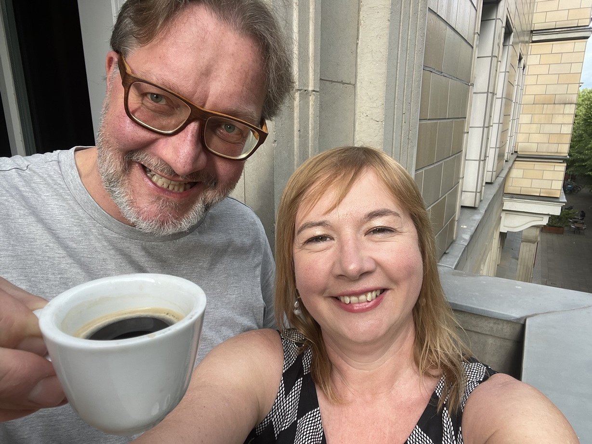

Vorbemerkung
Dr. Dirk Wissen ist promovierter Bibliotheks- und Literaturwissenschaftler sowie leidenschaftlicher Bibliothekar. Seine Dissertation hat den Titel Zukunft der Bibliographie – Bibliographie der Zukunft
. Wissen ist seit 30 Jahren Mitglied des BIB – Berufsverband Information Bibliothek e.V., bei dem er zehn Jahre, von 2015 bis 2026, Mitglied im BIB-Bundesvorstand und Herausgeber der Fach- und Verbandszeitschrift BuB – Forum Bibliothek und Information
war. In BuB erschien seit 2015 monatlich die Interviewreihe Wissen fragt … auf einen Espresso mit …
, in dessen Rahmen er 102 Interviews zum Thema Atmosphäre von Bibliotheken
führte.

Linda Freyberg (LF): Zunächst zu den Anfängen: Seit 2009 hattest du eine Gesprächsreihe im Rahmen von Lesungen und Neuerscheinungen.
Dirk Wissen (DW): Ja, es gab regelmäßig und jahrelang jeden Monat in Frankfurt (Oder) ein Format, das noch nicht Wissen fragt …
hieß, sondern Wissen trifft …
, wo auch namhafte Schriftstellerinnen und Schriftsteller wie Erich Loest und Juli Zeh nach Frankfurt (Oder) kamen. Und Literaturveranstaltungen moderierte ich bereits eine Zeit lang vorher in Münster und Würzburg.
Auch Martin Walser hatte seinen Weg vom Bodensee extra nach Frankfurt (Oder) gemacht, was zu sehr schönen, mir in Erinnerung bleibenden Momenten kam. Er und andere mussten ja dann auch aus Frankfurt (Oder) wieder zurückkommen und reise mal gegen 22 Uhr aus Frankfurt (Oder) zum Bodensee zurück. Er brauchte natürlich ein Hotel und so gab es eine gemeinsame Zugfahrt zurück bis nach Berlin.
So war es auch mit dem heutigen Bestseller-Autor Benedict Wells. Wir saßen gemeinsam im Zug und sprachen über Legasthenie und Analphabetismus, also über ganz andere Themen als in seinem Debütroman beziehungsweise worum es damals auf der Bühne ging. Und dann habe ich gesagt, dass ich auch irgendwie etwas Autistisches habe und dass ich beim Schreiben selber sehr viele Fehler mache, aber komischerweise Fehler in Büchern sofort sehe. Das wollte er erst nicht glauben und gab mir sein Buch. Ich blätterte es durch und sagte, hier ist ein Tippfehler. Also wirklich in Sekunden und dann hatten wir so ein Thema und er schenkte mir sein Buch und verriet mir, bei welchen Textstellen er auch weiß, dass da Fehler enthalten sind. Das Buch wurde mit zahlreichen lustigen Korrekturanmerkungen versehen und steht hier mit Widmung in meinem Bücherregal.
LF: Und wie ist das dann 2015 von dieser Gesprächsreihe zum Interviewformat in der BuB Wissen fragt …
gekommen?
DW: Da war ich noch gar nicht Herausgeber dieser Zeitschrift. Ich fand das BuB seit meinen Studienanfängen einfach toll, aber es hat ja auch Wechsel gegeben vom Format und von den Inhalten. Und irgendwann dachte ich mir, dass es ja immer diese Best Practice Beispiele und Interviews von dem und dem Bibliotheksdirektor oder -direktorin gab. Da habe ich der Redaktion eine E-Mail geschrieben, was sie davon halten würde, wenn man mal ab und zu Interviews führt mit einem Architekten, der gerade wieder eine Bibliothek baut, aber vielleicht diese nie nutzt, um Bücher auszuleihen oder einem Schriftsteller wie Martin Walser, von dem ein ganzes Bücherregal in den Öffentlichen Bibliotheken steht, dem das aber möglicherweise gar nicht bewusst ist, wie so eine Walser-Wand
aussieht. Und dann kam zurück: Ja, mach das mal, fünfmal. Die ersten fünf Interviews waren kompakt und schnell fertig, auch weil ich so eine Sicherheit wollte, dass das hintereinander weg funktioniert. Und dann gabs die Antwort, dass ich mal weiter machen solle, da waren diese noch gar nicht publiziert. Und glücklicherweise gab es später nicht einen kritischen Leserbrief, aber sehr viel positives Feedback im Laufe der Jahre.
LF: Also basiert die Reihe auf deiner Initiative und deinem Konzept?
DW: Ja, unter anderem die Idee, dass die letzte These, Fragestellung oder Problematik eines Interviewpartners, die genannt wird, an den nächsten weitergereicht wird. Und dass es immer einen Espresso gibt. Auch dass es ein Kurzinterview sein sollte und möglichst nie jemand aus der Politik oder eine Bibliothekskollegin oder -kollege interviewt werden sollte, aber es immer einen Bibliotheksbezug geben sollte, wie eben beim Architekten Max Dudler mit seinen Bibliotheksbauten. Wichtig war mir dabei immer, dass die Fotos der Bibliotheken von mir stammten, so dass ich nach Stockholm bin, um in der Stadtbibliothek die Rotunde oder nach Oslo, um die Jugendbibliothek Tøyen zu fotografieren – welche als Erwachsener gar nicht betreten werden darf, wozu Aat Vos extra eine Mail an die Bibliotheksleitung für mich schrieb.
LF: Und so entstanden dann 102 sehr vielseitige Interviews, vor allem mit Schriftsteller*innen, was ja nicht so überraschend ist, da du ja in der Literaturwissenschaft promoviert hast. Es war sogar eine Literaturnobelpreisträgerin dabei: Swetlana Alexandrowna Alexijewitsch. Wie war das denn mit ihr?
DW: Das war das 13te publizierte Interview in der Reihe. Nachdem sie gerade ihren Literaturnobelpreis erhalten hatte, saß ich bei ihr in einer Veranstaltung und stellte eine Publikumsfrage. Und hinterher sind dann sehr viele Leute für ein Autogramm angestanden, um sich ihr Buch signieren zu lassen. Und ich stand dazwischen. Bei mir schaut sie auf einmal hoch und sagte: Sie waren doch der aus dem Publikum mit dieser interessanten Frage zur Freiheit. Mit ihnen würde ich mich ja gern länger unterhalten.
– was die Übersetzerin übersetzte, da ich kein Wort Russisch spreche. Meinerseits sagte ich, dass dies gerne möglich sei und auch als Interview publiziert werden könne, da es gerade diese Anfrage von BuB gab, die bis dahin noch unveröffentlichte Interviewreihe weiterzuführen. Das führte dann dazu, dass sie für ein Gespräch in Berlin Wochen später zusagte. An dem Tag führte sie dann mehrere Interviews – vor mir war die taz, danach die FAZ, und das Schweizer Fernsehen und so weiter. Sie hatte also den ganzen Tag Interviews geführt, ähnlich wie Hugh Grant in Notting Hill, als er für das Gespräch mit Julia Roberts sagt, er käme von Horse & Hound
. Und hinterher, da bin ich heute noch gerührt davon, bekam ich eine E-Mail, dass sie sich am meisten an diesem Tag über mein Interview gefreut hätte. Vielleicht, weil ich überhaupt nicht über ihre Bücher mit ihr gesprochen hatte, obwohl sie aus meiner Frage bei der Veranstaltung wusste, dass ich die gelesen hatte. Aus irgendeinem Grund haben wir uns nur über Bibliotheken unterhalten und das fand sie toll.
Und genau zu dieser Zeit begann es auch mit den Selfies, die die Interviewpartner mit mir machten – so habe ich auch einfach ein Selfie gemacht. Zeitgleich gab es dann in einer sehr bekannten Musikzeitschrift Fake-Interviews. Da dachte ich mir, das glaubt dir ja niemand, dass du innerhalb einer Woche Max Dudler, den Architekten und Alexijewitsch, die Nobelpreisträgerin getroffen hast und habe dann die Selfies mit der Espressotasse, quasi als Beweis, an die BuB-Redaktion mit den Texten mitgeschickt. Dass die das dann zum Abdrucken verwendeten, überraschte mich – und dann wurde es wie zu einem Markenzeichen.
LF: Aber von den ersten Interviews gab es noch keine Selfies?
Doch, seit dem zweiten. Ich hatte quasi von Anfang an mit jedem ein Selfie als Erinnerung gemacht, weil sie selber auch mit mir eines gemacht hatten. Das war 2015 doch wie ein Trend. Und das Interview mit Frau Alexijewitsch war das sechste Gespräch, wurde aber erst viele Monate später zur Buchmessenausgabe von BuB gedruckt. Und mit dem ersten Interviewpartner habe ich mich einfach nochmal getroffen. Wir waren befreundet, das war der Philosoph Antoine Verbij.
Das ist leider auch eine traurige Geschichte: Ich habe mit ihm privat ein Gespräch geführt, und zwar einfach, weil wir uns kennengelernt hatten, als er über Döblins Berlin Alexanderplatz
etwas schreiben wollte. Ich führte ihn zu den Biberkopf-Orten und so lernten wir uns privat kennen. Er ist auch Journalist und Publizist und einmal sagte er dann zu mir das Gespräch, welches wir gerade führen, mit deinen Fragen zu Bibliotheken, das solltest du publizieren
. Also hat er mich im Grunde auf diese Idee gebracht. Wir haben dann noch gemeinsam verschiedene Veranstaltungen organisiert, unter anderem eine mit der holländischen Botschaft und ich habe ihm geholfen für seinen Artikel, der anlässlich des erstmaligen Erscheinens einer niederländischsprachigen Gesamtausgabe von Berlin Alexanderplatz
in einer holländischen Zeitung erschien. Wie gesagt, da bin ich mit ihm durch ganz Berlin spaziert, habe ihm reale Orte, die im Roman benannt werden, gezeigt, wie die Neue Welt
in dessen Zusammenhang Chaplin genannt wird – und wir haben uns einfach von Beginn an sehr gut verstanden. Doch das Traurige ist, er hat noch den Interviewtext freigegeben und verstarb eine Woche bevor das Heft publiziert wurde. Das hat emotional mit mir etwas gemacht und ich dachte, ich muss diese Idee weiterführen und dann ging das ja auch 101-mal weiter.
LF: Und wie lief dann im Folgenden die Akquise oder wie kamst du auf die Personen? Bei den Schriftsteller*innen ist das ja relativ naheliegend, weil du ja Interesse an Literatur hast und auf Lesungen gehst, aber es waren ja auch ganz viele andere Berufsgruppen dabei: Architekt*innen, eine Übersetzerin, ein Programmierer, Künstler*innen, viele Musiker*innen, Wissenschaftler*innen, und sogar mal ein Roboter und eine KI.
Gerade bei fachfremden Personen war es wahrscheinlich immer recht unterschiedlich, wie du mit denen in Kontakt gekommen bist. Kannst du über diesen Prozess etwas erzählen?
DW: Also ich habe meistens versucht den persönlichen Kontakt herzustellen, wenn es eine Veranstaltung gab. Das ist ja in Berlin im Grunde jeden Tag möglich. Was ich aber auch gemacht habe, ist, mich ganz offiziell an das Management zu wenden mit Informationen zu der Fachzeitschrift und der Interviewreihe. Das führte dann manchmal dazu, dass im Vorfeld vom Management mehr Fragen aufkamen, als ich für das eigentliche Interview vorgesehen hatte. Und deswegen sind natürlich auch einige Interviews gar nicht zustande gekommen. So wusste ich beispielsweise bei der Sängerin Balbina, dass ich vorab nichts von der Idee schreiben werde, zeitgleich ein dadaistisches Interview mit Anna Blume
führen zu wollen. Das habe ich dann die Künstlerin einfach beim Interview gefragt, ob sie sich das vorstellen könne, wie es dann ja auch publiziert wurde.
LF: Möchtest du verraten, an wen es am Schwierigsten war, ranzukommen?
DW: Ja, das war Karl-Ove Knausgård, dessen Bücher ich alle gelesen habe, und mir die Mühe gemacht hatte, jede Bibliothek, die er in seinen Büchern nennt, in einer Liste aufzuschreiben, damals noch händisch ganz ohne KI. Es sollte um das Thema Volltextrecherche
gehen. Und diese Liste habe ich ihm bei einer Lesung gegeben und zwei Jahre später, bei einer weiteren Lesung von ihm nochmal nachgefragt und so weiter – es gibt mehrere Selfies mit ihm, aber kein Interview. Wir haben auch miteinander gesprochen, aber das eigentliche Interview fand dann nicht statt und das war natürlich mit einigen Personen so.
Aber das Positive ist, mit Vielen hat es sehr schnell funktioniert. In dem Moment, wo ich jemanden angefragt habe, war ich immer am selben Tag der Anfrage bereit, weil es sein konnte, dass es einen Anruf gab oder nach einer Veranstaltung ich sofort für das Gespräch irgendwo mit hinkommen sollte.
Es gab aber auch Interviews, für die ich lange im Voraus eine Anfrage gestellt hatte. Volker Kutscher, den kennt man ja von der Verfilmung seiner Romane durch Babylon Berlin
. Da lief es ganz offiziell über den Verlag und die haben mir dann nett geschrieben, dass sie die Anfrage interessant finden und Herr Kutscher wahrscheinlich auch, dass sie aber diese nur gerade nicht an ihn weitergeben dürfen, da er derzeit seine Schreibzeit hat – für den neuen Roman. Und da kam etwa ein Jahr später plötzlich eine E-Mail: So, er ist fertig mit dem Schreiben. Er ist jetzt bereit. Und da ist man natürlich dann auch überrascht und muss erst mal in der eigenen Schublade krempeln, wo die Notizen für ein mögliches Interview verblieben sind.
Und manchmal ging es dann ganz schnell: Wie es mir mit dem Philosophen Rüdiger Safranski passiert ist. Ich war abends auf dem Weg zu einer Feier. Ab einem bestimmten Zeitpunkt haben sich die Interviews nach den Schwerpunktthemen des Heftes orientiert und der nächste Schwerpunkt war Italien. Goethe interviewen ging ja nicht mehr und ich kannte keine Italiener, außer einen Architekten, aber der war gerade wegen eines größeren Bauprojekts in Nürnberg. Und dann fiel mir auf einmal ein, zu Goethe, dass Safranski zwei dicke Bücher über Schiller und Goethe und insbesondere Goethes Romantik geschrieben hatte. Da gucke ich auf dem Weg zu der Feier ins Handy und sehe, jetzt hat er auch noch passend zum Kafka-Jahr eine Kafka-Biografie geschrieben. Dann bin ich auf die Homepage des Verlags und sah, dass er am nächsten Tag um 9:00 Uhr in Potsdam auftritt. Und da er eigentlich in Süddeutschland wohnt und nicht mehr so viel reist, bin ich dann nach einer langen Party und nur vier Stunden Schlaf nach Potsdam gefahren. Die schöne Begebenheit war, dass ich mit ihm vor ein paar Jahren schon zweimal Veranstaltungen hatte. Ich sitze also im Publikum, er kommt in den Saal rein, sieht das Publikum und geht nicht zur Bühne, sondern zu mir und sagt wie schön, sie wiederzusehen
. Und natürlich haben die vom Verlag und die Veranstalter sich alle gefragt, was ist denn das für einer – ich sah glaube ich noch etwas nach Party
aus. Doch bei seiner Begrüßung habe ich direkt die Gelegenheit genutzt und ihn gefragt: Herr Safranski, haben Sie nach ihrer Veranstaltung vielleicht Zeit für ein kurzes Interview?
Und er hat zugesagt und ich hatte mich nachts noch in meinen Träumen vorbereitet, mit wenig Schlaf, um dieses Interview mit Safranski führen zu können. Im Nachhinein würde ich auch sagen, eigentlich geht es gar nicht um die jeweils interviewte Person, sondern um die Fragen und den dazu gegebenen Antworten – so, wie dann die Gespräche sich vom Dritten Ort
in Richtung Vierter Ort
entwickelten.
LF: Von Italien zum Thema der Orte, an denen die Interviews stattgefunden haben. Da hast du dich ja offensichtlich immer sehr auf den Partner oder die Partnerin eingelassen, also bist dahin gegangen, wo die Interviewten gerade waren.
DW: Ich gebe zu, als das mit Corona anfing, habe ich gedacht, so, jetzt habe ich das fünf Jahre gemacht – ich glaube, ich höre jetzt mal auf mit den Interviews. Aber dann sagte der BuB-Redakteur am Telefon, mit dem ich immer einen sehr engen Kontakt hatte, dass ihnen gerade Fachartikel wegbrechen. Er hat mir angeboten, das Format auszuweiten, von vier bis sechs Seiten auf bis zu acht. Doch die Frage blieb, wo trifft man sich – und ich sagte dem Redakteur, ich mache das nur weiter, wenn ich mich mit den Leuten weiterhin treffen kann. Unter den gegebenen Umständen hatten wir dann – man sieht es auf einigen Selfies – manchmal zehn Meter Abstand. Zu dieser Zeit gab es Treffen mit dem Bassisten von den Beatsteaks, Torsten Scholz, auf einem Schulhof. Und wir sind da eingebrochen
, weil ja alles verschlossen war.
LF: Und wie kam da der Kontakt zustande?
DW: Weil er Elternsprecher war und ich kannte eine Elternsprecherin derselben Schule in Berlin und sie hatte die Handynummer. Sie gab mir ausnahmsweise die Handynummer von ihm, da habe ich ihm eine SMS geschrieben, wer ich bin und dass ich mir vorstellen kann, dass sich gerade sein Leben total umgekrempelt hat. Da ja alle mitbekommen haben, dass Konzerte abgesagt wurden und er nun das Homeschooling mit den Eltern mitorganisieren musste. Es hat keine halbe Stunde gedauert, bis er mir zurück gesimst hat. Und da auch wieder diese Situation: Wir haben uns mittags geschrieben, ich musste bis 16:00 Uhr arbeiten und um 17:00 Uhr waren wir dann auf diesem Schulhof und haben das Interview geführt. Am selben Tag habe ich abends auch noch Balbina interviewt – auch persönlich – und am nächsten Tag war dann für Wochen der Lockdown. Balbinas Management hatte mir zugesagt, das Gespräch war aber erst in drei Wochen geplant. Dann kam eine Mail: Wir sollten das vielleicht vorschieben und zwar auf heute, wegen des Lockdowns. Sie hatte an dem Tag ein Privatkonzert für eine große Firma gegeben. Da wurde ich dann eingelassen und war im Backstagebereich und habe das Interview mit ihr geführt. Es sollte auch für mich lange Zeit das letzte Konzert gewesen sein, das ich im Anschluss sehen durfte.
LF: Und war es nicht manchmal, gerade mit Musiker*innen, ein bisschen schwierig, den Bibliotheksbezug herzustellen? Ging es deswegen auch übergeordnet um die Atmosphäre in Bibliotheken, weil das ein bisschen abstrakter ist und jeder damit etwas anfangen kann, auch aus eigener Bibliothekserfahrung?
DW: Ich würde sagen, ja. Aber ich habe auch Notizen von den Ärzten, Campino, Clueso und Andreas Dorau, in deren Liedern es Bibliotheksbezüge gibt. Heute wäre es wahrscheinlich mit Chatbots einfacher, solche Notizen herzustellen. Meine habe ich jahrelang notiert. Und bei vielen, nicht nur Musikern, habe ich versucht, nicht nur den Bibliotheksbezug herzustellen, sondern auch den Text zu kürzen, wenn die dann anfingen, aus ihrer Kindheit zu erzählen. Weil ja alle in ihrer Kindheit es geliebt haben, in die Bibliothek zu gehen und weil ich wollte, dass es um das Jetzt
und um die Atmosphäre geht und nicht um Kindheitserinnerungen. Wichtig waren mir die spezifischen Perspektiven der Interviewten: Ist beispielsweise aus der Sichtweise eines Regisseurs so eine Bücherwand einfach nur Kulisse oder hat er Lust, beim Filmdreh in einem der Bücher zu lesen? Ist für die Beatsteaks oder DenManTau eine Bibliothek ein Ort, wo sie ein Konzert geben würden? So habe ich auch diese Straßenmusiker interviewt, die jetzt anfangen Clubs zu füllen und die vor ein paar Jahren noch auf der Berliner Oberbaumbrücke auftraten. Oder wie nutzen Schriftsteller eine Bibliothek? Ulrike Draesner fing dann an zu erzählen, nicht aus ihrer Kindheit, sondern aus ihrem Studium – dass es früher in der Münchner Staatsbibliothek üblich war, dass es dort Weißwürste und Leberkäs gab. Und wenn sie morgens um 10 Uhr kam, gab’s die in der Kantine bereits, so dass die Bibliothek dann nach dem Leberkäs roch. Und das ist Atmosphäre, wenn von Gerüchen, Klängen und so weitererzählt wird.
LF: Und gab es nicht auch ein Gespräch in einer Sauna?
DW: Ja, das hatte auch was. Aber mir war in dem Moment, wo dies dort stattfinden sollte, klar, dass das mit dem Diktiergerät dann nicht funktionieren wird – das kann man ja nicht mit reinnehmen. So wurde das ein Erinnerungsnotizgespräch, wo mir der Autor Falko Henning zugesagt hatte mitzuhelfen, das Gesagte wieder zu rekonstruieren. Folglich bin ich direkt nach der Sauna nach Hause und hab alles aufgeschrieben, was er gesagt und was ich gefragt hatte. Das fand ich dann aber auch spannend. Und so gab es ganz unterschiedliche Interviews.
So war ich auch einmal mit einem Mönch in einer Klausur, wo ein weltlicher Mensch gar nicht reinkommt. Er hat plötzlich im Gespräch auf die Uhr geschaut und gesagt: So, jetzt sind meine anderen Brüder alle im Gebet in der Kirche und in der Klausur dürfte sich jetzt keiner mehr befinden. Ich nehme sie mal mit.
Und dann war ich in der Bibliothek der Klausur, wo es eine Zugangssperre gibt. Das war spannend, wie auch in der Gefängnisbibliothek von Münster. Und ich durfte Fotos der Kloster- wie auch der Gefängnisbibliothek machen und diese publizieren.
Doch mit Vielen habe ich mich natürlich in Cafés oder Bibliotheken getroffen.
LF: Und hat sich der Prozess über die Jahre auch verändert? Also, du hast schon mal gesagt, dass du eigentlich nicht mit KI transkribieren würdest und dass das vielleicht ja auch jetzt ein guter Zeitpunkt ist, wo das alle machen können, mit den Interviews aufzuhören.
DW: Also das bringt es genau auf den Punkt. Nach diesen ersten fünf Interviews habe ich mich mit der Redaktion zusammengesetzt und weitergemacht. Und irgendwann haben wir auch eins ganz bewusst geändert, nämlich dass es immer ein Gespräch zum Schwerpunktthema der Zeitschrift werden sollte. Die ersten fünf Interviews waren noch ganz frei. Doch bei den Schwerpunktthemen wie zum Beispiel Gefängnisbibliotheken
, kam schon die Frage auf, wer lässt sich da interviewen – ein Inhaftierter oder doch der Gefängnisbibliotheksleiter? Doch wollte ich ja immer keine Bibliothekarin oder Bibliothekar interviewen.
LF: Auch wenn es total schwierig ist im Nachhinein: Könntest du sagen, was die Top 3 deiner schönsten Interviews sind? Also wenn du jetzt daran denkst und dich immer noch total freust oder wenn du es nochmal liest, dass du denkst, das war jetzt wirklich eins meiner schönsten Interviews.
DW: Wirklich schwierig, weil die alle so unterschiedlich waren. Doch die Frage ist gut, da sie schwierig zu beantworten ist. Man könnte jetzt sagen den, die und der und damit ist die Frage beantwortet. Aber die Dialoge waren vielleicht vom Rahmen her alle gleich mit der Espressotasse, dem Thema Atmosphäre
und jeweils geplanten 20 Minuten. Hierbei war mir immer die persönliche Begegnung ganz wichtig, wenn möglich nicht per Telefon, nicht per E-Mail, was im Nachgang manchmal passierte und auch redaktionell oder journalistisch völlig okay ist, sondern dass man sich immer persönlich trifft und in die Augen sieht. Und mit Armin Maiwald gab es ein Gespräch von vier Stunden, statt der 20 Minuten.
Ich habe, glaube ich, eine Art, mit den Menschen umzugehen, dass ich sie erstmal neutral sehe. Sie können noch so berühmt sein, das tangiert mich nicht. Ich weiß aber, wer das ist und ich versuche immer sehr achtungsvoll, sehr entgegenkommend und aufmerksam zuhörend zu sein. Das wurde mir auch oft widerspiegelt. Es sind Menschen dabei gewesen, die sehr, sehr viele Interviews geben, die sich hinterher bei mir bedankt und gesagt haben, endlich mal jemand, der zugehört hat und keine vorformulierten Fragen nutzt. Und das ehrt mich – also ohne mich jetzt selber loben zu wollen. Da habe ich oft einfach für mich eine Dankbarkeit empfunden und ich habe nach wie vor zu vielen noch einen persönlichen Kontakt. Der eine lädt mich regelmäßig zu seinem Geburtstag ein und der andere hat mich zu seiner letzten Filmpremiere eingeladen, wo berühmte Menschen
neben mir im Publikum saßen, woraus wiederum ein weiteres Interview entstanden ist.
Deshalb ist es vielleicht auch schwierig zu sagen, welches das Schönste war, denn das mit Nora Gomringer war genauso toll wie das mit ihrem Vater Eugen Gomringer. Doch beide Dialoge waren sehr unterschiedlich – dabei ging es mir immer um die Menschen, deren Antworten und sich einfach auf die jeweilige Situation einzulassen und zuzuhören, da jeder seine eigene Geschichte hat. Und klar, ein investigativer Journalist könnte ich mit dieser Haltung nie werden.
LF: Sowas wie Aufhören, wenn es am schönsten ist, passt vielleicht nicht, weil du hast ja gerade geschildert, dass du gar nicht richtig aufgehört hast, weil du mit den Menschen immer noch Kontakt hast. Kannst du dir vorstellen, dass nochmal, vielleicht auch in einer unstrukturierteren, lockereren Form nochmal aufzugreifen?
DW: Oh, nun wird vom Zuhören
zum Aufhören
übergeleitet. Doch unbedingt, gerne mache ich in lockerer Form weiter, wenn es die letzten zehn Jahre nicht locker genug war. Vielleicht mit Wissen tanzt …
also ganz locker. Derzeit führe ich auch viele Interviews mit Verwandten meiner Familie, um ein Buch schreiben zu können. Aber mit dem Format Wissen fragt …
ist jetzt definitiv Schluss. Das letzte Interview ist in der BuB-Doppelausgabe Dezember/Januar 2025/26 erschienen. Das war das Interview mit Gerhard Henschel. Dieses, das möchte ich sagen, war schon besonders für mich, da ich über zehn Jahre lang seine Bücher gelesen habe. Er hatte in den 1990er Jahren begonnen seinen Romanzyklus zu schreiben, woraus das erste Buch seiner Schlosser-Romane
2004 erschien. Das ist seine Lebensbiographie. Für das Interview hätte ich ja am liebsten mal sein eigenes Privatarchiv gesehen, wie ich auch im Privatarchiv von Hermann Glaser sein durfte – doch das hatte zeitlich nicht geklappt, aber ich habe nun eine Einladung, jederzeit vorbeikommen zu dürfen.
LF: Und jetzt erscheinen bald die gesammelten Interviews, also die 102 Interviews. Möchtest du dazu noch abschließend etwas sagen?
DW: Also diese Publikation soll dieses Jahr bei einem größeren wissenschaftlichen Verlag erscheinen, online und als gebundenes Sammelwerk. 1 Es wird über 700 Seiten haben. Und das ehrt mich und es freut mich sehr.
Übrigens war ich gestern bei der Lesung von Anne Berest, es ging um ihre Bücher Die Postkarte
und ihr neues Buch Vatertage
. Da waren gleich drei frühere Interviewpartner im Publikum, deren Dialoge mit mir nun im selben Buch erscheinen werden. Später bekam ich dann auch noch eine Einladung zu einer Literaturveranstaltung, bei der Campino moderieren wird. Vielleicht sollte ich die Interviews ja doch weiterführen?
LF: Ja toll, dann freuen wir uns jetzt alle auf dieses Buch und ich danke dir recht herzlich fürs Interview, lieber Dirk.
DW: Ich danke Dir, liebe Linda und freue mich über dieses Gespräch. Vielen Dank auch, dass du dir die Zeit nimmst und nun das machst, also die Schreibarbeit nach einem Interview, die ich 102-Mal machen durfte :)
Verlagsankündigung: http://www.degruyterbrill.com/isbn/9783112236932↩︎
Dr. Linda Freyberg (https://orcid.org/0000-0002-4620-7571) ist
Mitherausgeberin und Redakteurin der LIBREAS. Sie hat zum Thema
Ikonizität der Information. Die Erkenntnisfunktion struktureller und
gestalteter Bildlichkeit in der digitalen Wissensorganisation
an der
Leuphana Universität promoviert. Sie ist wissenschaftliche Mitarbeiterin
an der BBF | Bibliothek für Bildungsgeschichtliche Forschung des DIPF |
Leibniz-Institut für Bildungsforschung und Bildungsinformation in Berlin
(https://www.dipf.de/de/institut/personen/freyberg) und
hat dort die Co-Leitung des DHELab (https://bbf.dipf.de/de/dhelab) inne.
Dr. Dirk Wissen ist promovierter Bibliotheks- und
Literaturwissenschaftler sowie leidenschaftlicher Bibliothekar. Seine
Dissertation hat den Titel Zukunft der Bibliographie – Bibliographie
der Zukunft
. Wissen ist seit 30 Jahren Mitglied des BIB – Berufsverband
Information Bibliothek e.V., bei dem er zehn Jahre, von 2015 bis 2026,
Mitglied im BIB-Bundesvorstand und Herausgeber der Fach- und
Verbandszeitschrift BuB – Forum Bibliothek und Information
war.